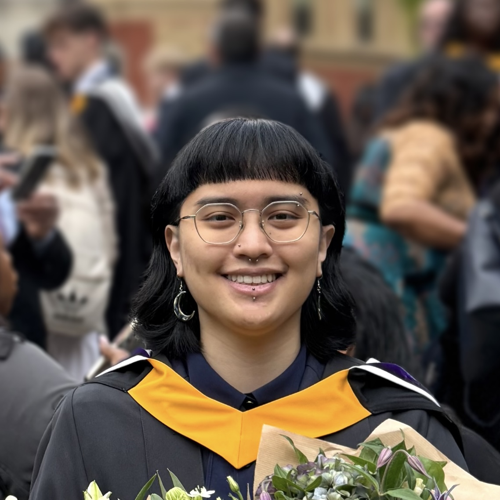

PhD Student, Cancer Sciences, University of Glasgow
wsotthivej@gmail.com · Glasgow, UK
I am a PhD student at the University of Glasgow (funded by/based at the Cancer Research UK Scotland Institute), working on the mapping and modelling of cancer cell heterogeneity in pancreatic ductal adenocarcinoma (PDAC). Before starting my PhD, I completed
an MRes in Bioinformatics and Theoretical Systems Biology at Imperial College London, where I worked on
phylodynamic
inference of phenotypic switching parameters in neuroblastoma. I am interested in how mathematical modelling of cancer cells can give us a mechanistic understanding of the development of treatment resistance, and ultimately translate into better patient outcomes.
Outside of research, I enjoy
learning languages, cooking, and competing in sabre fencing (or used to).
PhD in Cancer Sciences
University of Glasgow (CRUK Scotland Institute)
2026 – present
MRes in Bioinformatics and Theoretical Systems Biology
Imperial College London, Department of Life Sciences
2025 – 2026
BSc in Mathematics with Applied Mathematics/Mathematical Physics
Imperial College London, Department of Mathematics
2022 – 2025
Mathematically, I am interested in using Bayesian methods for parameter inference in stochastic models.
In particular, I have been using a lot of
Approximate Bayesian Computation (ABC),
although I also have experience in
Markov chain Monte Carlo (MCMC)
methods through my undergraduate degree.
For my PhD, I am picking up more experience in Partial Differential Equations (PDEs) and Agent-Based Modelling (ABM).
Biologically, I am interested in understanding how the heterogeneity of cancer cells leads to the development of treatment resistance.
In particular, the idea of adaptive therapy
was introduced to me by my Master's thesis co-supervisor (Maxi Strobl),
which was influential in shaping my thinking and research interests.
My Master's thesis was on neuroblastoma, which can be separated into two cell phenotypes with different susceptibilities to treatment. Cells can interconvert between these two states,
('phenotypic plasticity'), and it is easy to imagine how this
could lead to the development of treatment resistance. Being able to quantify the rates of switching would thus be useful in testing our hypotheses regarding plasticity, and as such my thesis
focused on developing an inference framework to be able to recover phenotypic switching rates from cell counts and single-cell phylogenies.
My interest in parameter inference from experimental data has continued into my PhD work. Although I am now working with pancreatic ductal adenocarcinoma (PDAC), the idea remains the same.
The heterogeneity in cancer cells, and how the cell states change over time, shapes how treatment resistance develops, and so I would like to understand and quantify the cellular dynamics.
PhD Student (Integrative Modelling group)
Cancer Research UK Scotland Institute, Glasgow, UK
2026 – Present
Software Developer Intern
Softwire, London, UK
2025
Languages (by level of fluency): English, Thai, French (A2/B1 - check back next year!)
Email: wsotthivej@gmail.com
GitHub: github.com/theajs87
LinkedIn: linkedin.com/in/theasotthivej/